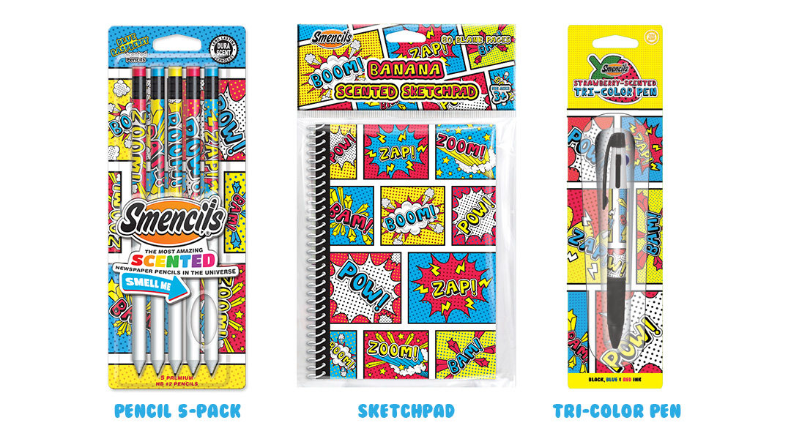
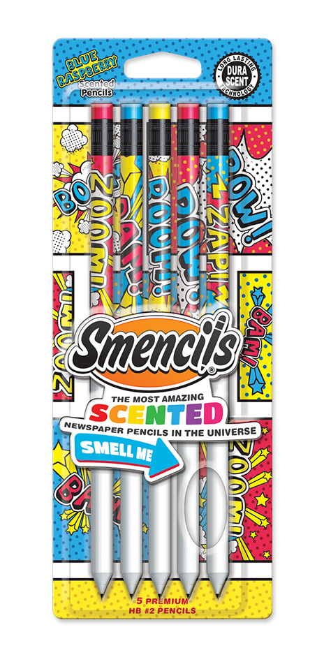
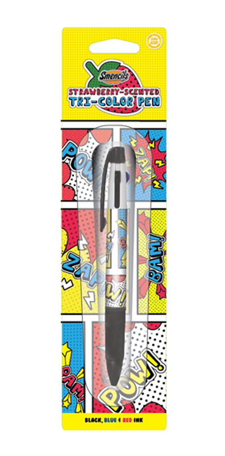
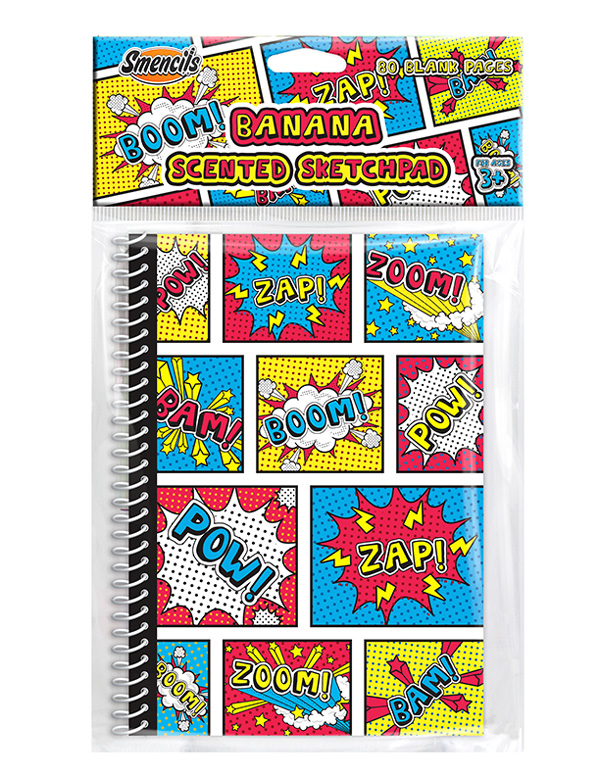

Kevin D. Looney
Designer
Graphics | Web | UX
 back
back
Smencils Comics School Supplies Line




Project created with:
- Illustrator
- Photoshop
This project was created for Scentco Inc as a possible line of scented stationery/school supplies. The collection was made up of scented pencils, scented tri-color pen and a sketchpad with a scratch and sniff scented cover.
The idea for the collection is that it's made for all kids but skews a bit more toward the boys. To keep i tmore neutral, I kept the comics them text-based and used primary colors. I took the idea of the three primary colors and stretched it into the scents as well. Each product is a different scent inspired by the colors: Banana (yellow), Blue Raspberry (blue) and Strawberry (red).